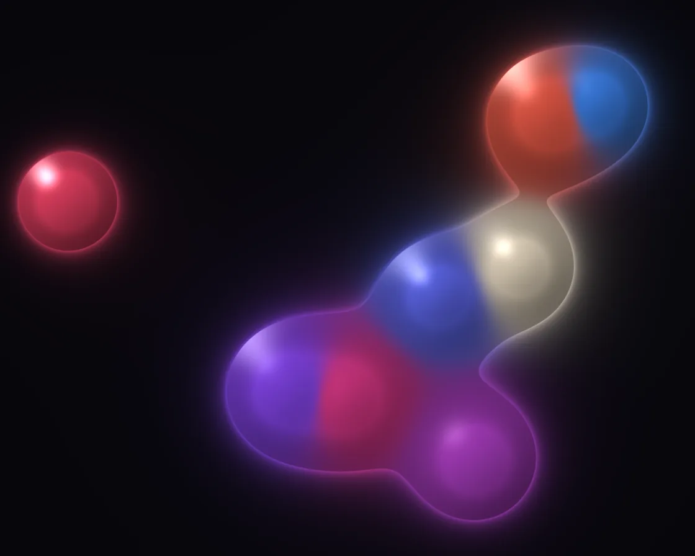

Metaballs
Metaballs is a WebGL effect: summed inverse-square fields, thresholded into one surface. One plain JavaScript file with no dependencies; add it with npx motion-library add metaballs.

Open it live, tune it and copy the code
What is Metaballs?
Glossy blobs drift and flow into one another with smooth necks; the cursor is a blob too.
How does Metaballs work?
Each blob adds r² / d² to a field with the surface at 1; the field’s exact gradient lights each pixel and anti-aliases the rim.
How do I add Metaballs to my website?
- In your project folder, run
npx motion-library add metaballs. It writesanimations/metaballs.js. Needs Node 18 or newer. - Import it and call it with a container element that has a size:
import fx from './animations/metaballs.js'; const stop = fx(document.querySelector('#hero')); - Call
stop()to clean up, for example when a component unmounts.
Every setting below is also a flag, so you can install it already tuned: npx motion-library add metaballs --count 12.
What settings can I tweak?
| Setting | Flag | Default | Range | Step |
|---|---|---|---|---|
| Blobs | --count | 7 | 2 to 12 | 1 |
| Speed | --speed | 1 | 0 to 3 | 0.05 |
| Gloss | --gloss | 1 | 0 to 2 | 0.05 |
Specifications
- Renderer
- WebGL
- Category
- Generative & math
- Dependencies
- None
- File size
- 7.0 KB, unminified
- Interactive
- Yes: it responds to the pointer
- Reduced motion
- Respects prefers-reduced-motion
- Licence
- MIT-0: use it anywhere, no credit needed
Source code
// Metaballs: every blob is an invisible field that falls off as r² / d² (inverse square). The fields are summed and
// the surface is wherever the sum crosses 1, so two blobs that drift close don't overlap, they flow into one shape
// with a smooth neck, and pull apart the same way. The same sum gives each pixel a height (1 − 1/field) whose slope
// lights it like a glossy bead, and its colour is a weighted blend of the nearby blobs' colours. Outside the surface
// the field still glows a little. The pointer (or an idle ghost) is one more blob.
const PARAMS = { count: 7, speed: 1, gloss: 1 };
export default function (stage) {
const canvas = document.createElement('canvas');
canvas.style.cssText = 'position:absolute;inset:0;width:100%;height:100%;display:block';
stage.append(canvas);
const gl = canvas.getContext('webgl2', { antialias: false });
if (!gl) { stage.textContent = 'This needs WebGL2.'; return () => canvas.remove(); }
const reduce = matchMedia('(prefers-reduced-motion: reduce)').matches;
const vs = `#version 300 es
in vec2 p; void main() { gl_Position = vec4(p, 0, 1); }`;
const fs = `#version 300 es
precision highp float; out vec4 o;
uniform vec2 R, M; uniform float T, D, MA, u_count, u_speed, u_gloss;
float hash(vec2 p) { return fract(sin(dot(p, vec2(127.1, 311.7))) * 43758.5453); }
vec2 hash2(vec2 p) { return fract(sin(vec2(dot(p, vec2(127.1, 311.7)), dot(p, vec2(269.5, 183.3)))) * 43758.5453); }
float noise(vec2 p) { vec2 i = floor(p), f = fract(p); f = f * f * (3. - 2. * f);
return mix(mix(hash(i), hash(i + vec2(1, 0)), f.x), mix(hash(i + vec2(0, 1)), hash(i + 1.), f.x), f.y); }
float fbm(vec2 p) { float s = 0., a = .5; mat2 m = mat2(1.6, 1.2, -1.2, 1.6); for (int i = 0; i < 5; i++) { s += a * noise(p); p = m * p; a *= .5; } return s; }
vec3 hue(float h) { // a narrow, warm-to-violet family rather than a rainbow
return h < .33 ? mix(vec3(1., .42, .2), vec3(1., .2, .45), h * 3.) : h < .66 ? mix(vec3(1., .2, .45), vec3(.55, .25, 1.), h * 3. - 1.) : mix(vec3(.55, .25, 1.), vec3(.2, .55, 1.), h * 3. - 2.);
}
void main() {
vec2 p = (gl_FragCoord.xy - .5 * R) / R.y;
float asp = R.x / R.y;
float f = 0.; vec2 gr = vec2(0); vec3 ca = vec3(0); float wa = 0.;
for (int i = 0; i < 13; i++) {
float fi = float(i);
bool cur = i == 12;
if (!cur && fi >= u_count) continue;
vec2 c; float r;
if (cur) { c = M; r = .075; }
else {
float h = hash(vec2(fi, 3.7)), h2 = hash(vec2(fi, 9.1));
c = vec2(sin(T * (.23 + .2 * h) + fi * 2.4) * (asp * .5 - .12), sin(T * (.31 + .17 * h2) + fi * 1.7 + 1.) * .36);
r = .055 + .045 * hash(vec2(fi, 1.3));
}
vec2 dv = p - c; float d2 = max(dot(dv, dv), 1e-6);
float k = r * r / d2;
f += k; gr += -2. * k * dv / d2;
vec3 cc = cur ? vec3(1., .93, .82) : hue(fract(fi * .29 + .1));
float k3 = k * k * k; ca += cc * k3; wa += k3;
}
vec3 col = ca / max(wa, 1e-6);
float px = 1. / R.y;
float e = length(gr) * px; // how much the field changes across one pixel
float inside = smoothstep(1. - e, 1. + e, f);
// the surface as a height field: flat at the core, steep at the rim
vec2 gh = gr / (f * f);
vec3 n = normalize(vec3(-gh * .025, 1.));
vec3 L = normalize(vec3(-.5, .6, .8)), V = vec3(0, 0, 1);
float dif = max(dot(n, L), 0.);
float spec = pow(max(dot(reflect(-L, n), V), 0.), 40.) * u_gloss;
float fres = pow(1. - n.z, 2.);
vec3 surf = col * (.18 + .75 * dif) + vec3(1) * spec * .9 + col * fres * .9;
surf *= .75 + .25 * smoothstep(1., 3., f);
vec3 bg = vec3(.02, .018, .035);
vec3 glow = col * pow(clamp(f, 0., 1.), 3.) * .45;
vec3 outC = bg + glow;
vec3 c3 = mix(outC, surf, inside);
c3 += col * exp(-abs(f - 1.) * 18.) * .25 * (1. - inside); // a thin halo just outside the rim
o = vec4(pow(c3, vec3(.92)), 1);
}`;
const sh = (t, s) => { const x = gl.createShader(t); gl.shaderSource(x, s); gl.compileShader(x); if (!gl.getShaderParameter(x, gl.COMPILE_STATUS)) throw new Error(gl.getShaderInfoLog(x)); return x; };
const prog = gl.createProgram(); gl.attachShader(prog, sh(gl.VERTEX_SHADER, vs)); gl.attachShader(prog, sh(gl.FRAGMENT_SHADER, fs)); gl.bindAttribLocation(prog, 0, 'p'); gl.linkProgram(prog);
if (!gl.getProgramParameter(prog, gl.LINK_STATUS)) throw new Error(gl.getProgramInfoLog(prog));
gl.useProgram(prog);
gl.bindBuffer(gl.ARRAY_BUFFER, gl.createBuffer()); gl.bufferData(gl.ARRAY_BUFFER, new Float32Array([-1, -1, 3, -1, -1, 3]), gl.STATIC_DRAW);
gl.enableVertexAttribArray(0); gl.vertexAttribPointer(0, 2, gl.FLOAT, false, 0, 0);
const U = {}; ['R', 'M', 'T', 'D', 'MA', 'u_count', 'u_speed', 'u_gloss'].forEach(n => U[n] = gl.getUniformLocation(prog, n));
let dpr = 1;
const resize = () => { dpr = Math.min(devicePixelRatio, 2); canvas.width = (stage.clientWidth || 1) * dpr | 0; canvas.height = (stage.clientHeight || 1) * dpr | 0; gl.viewport(0, 0, canvas.width, canvas.height); };
const ro = new ResizeObserver(resize); ro.observe(stage); resize();
// the pointer, in shader space (units of stage height, origin at the centre, y up); an idle "ghost" takes over
// when nobody is pointing, so the card is never static
let tx = 0, ty = 0, mx = 0, my = 0, ma = 0, lastMove = -1e9, gt = 0;
const toLocal = e => { const b = canvas.getBoundingClientRect(); return [(e.clientX - b.left - b.width / 2) / b.height, (b.height / 2 - (e.clientY - b.top)) / b.height]; };
const onMove = e => { [tx, ty] = toLocal(e); lastMove = performance.now(); };
const onLeave = () => { lastMove = -1e9; };
const onDown = e => { onMove(e); };
canvas.addEventListener('pointermove', onMove); canvas.addEventListener('pointerdown', onDown); canvas.addEventListener('pointerleave', onLeave);
let raf, t = 0, last = performance.now();
function frame(now) {
const dt = Math.min(0.05, (now - last) / 1000); last = now;
t += dt * PARAMS.speed * (reduce ? 0.05 : 1);
const live = now - lastMove < 2500, asp = canvas.width / canvas.height;
if (!reduce) gt += dt;
if (!live) { tx = asp * 0.3 * Math.sin(gt * 0.41) + 0.06 * Math.sin(gt * 1.3); ty = 0.24 * Math.sin(gt * 0.67 + 1.2); }
const k = 1 - Math.exp(-dt * (live ? 14 : 3));
mx += (tx - mx) * k; my += (ty - my) * k; ma += ((live ? 1 : 0) - ma) * (1 - Math.exp(-dt * 4));
gl.uniform2f(U.R, canvas.width, canvas.height); gl.uniform1f(U.T, t); gl.uniform1f(U.D, dpr);
gl.uniform2f(U.M, mx, my); gl.uniform1f(U.MA, ma);
gl.uniform1f(U.u_count, PARAMS.count);
gl.uniform1f(U.u_speed, PARAMS.speed);
gl.uniform1f(U.u_gloss, PARAMS.gloss);
gl.drawArrays(gl.TRIANGLES, 0, 3);
raf = requestAnimationFrame(frame);
}
raf = requestAnimationFrame(frame);
return () => { cancelAnimationFrame(raf); ro.disconnect(); canvas.removeEventListener('pointermove', onMove); canvas.removeEventListener('pointerdown', onDown); canvas.removeEventListener('pointerleave', onLeave); gl.getExtension('WEBGL_lose_context')?.loseContext(); canvas.remove(); };
}